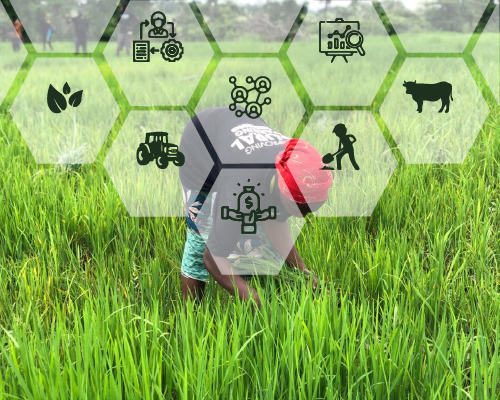

Improving Rural Farming Sustainably
Farmcenta is the fastest growing agri-tech company in Nigeria that engages in providing sustainable access of essential resources to farmers and agribusinesses, geared towards maximum contribution to global food security
Our Services
Get Superior Agribusiness Consulting Services with Sustainable Results. We provide exceptional agribusiness consultancy services through our experts with relevant proven skills from different fields across the agricultural value chain.

Result-oriented process and structure for agribusinesses

Network with relevant agribusinesses
Premium market analysis for agriproducts
Business plan and funding opportunities
